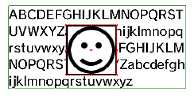
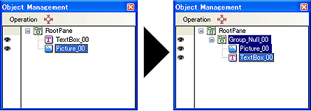
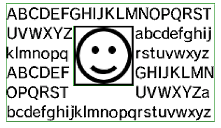
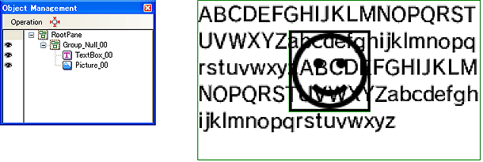

テキストがピクチャオブジェクトと重ならないように、回り込ませることができます。
テキストオブジェクトとピクチャオブジェクトを用意します。

重ねたテキストオブジェクトとピクチャオブジェクトを、同じグループにします。

同じグループになったテキストオブジェクトが、ピクチャオブジェクトの下に表示されている場合は、テキストがピクチャオブジェクトの周りを回り込みます。

グループの状態のままでも、テキストオブジェクトとピクチャオブジェクトの表示の優先順位を変え、
テキストがピクチャオブジェクトの上に表示されるようにして、回り込み機能を解除できます。
